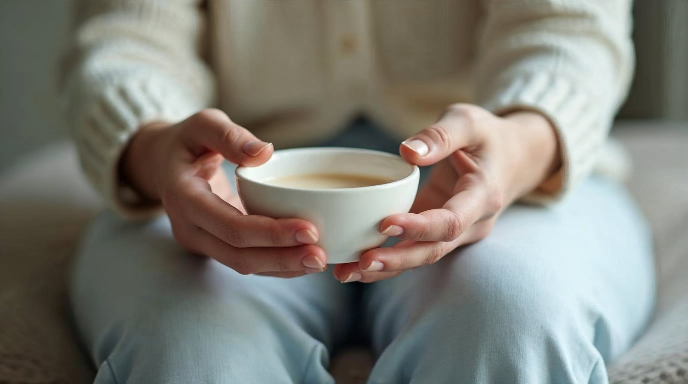
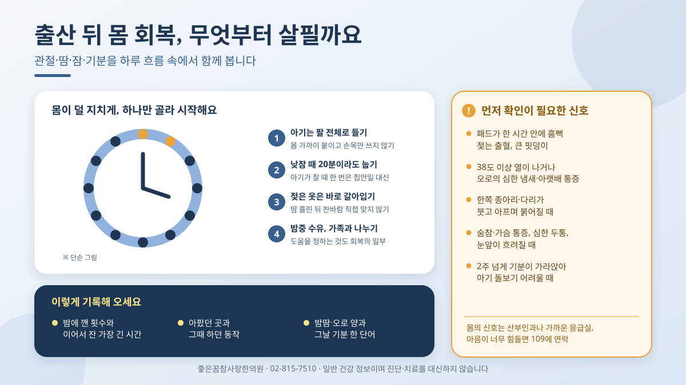

이종호 한의사 감수좋은꿈참사랑한의원 대표원장 (한의사 면허번호 19769)발행 2026-11-26 · 수정 2026-11-26
이 글의 차례
새벽 세 시 반, 수유를 마치고 아기를 겨우 눕혔습니다. 손목은 시큰하고, 등은 땀에 젖어 있고, 다시 누우려는데 골반 한쪽이 뻐근하게 걸립니다. 잠은 두 시간째 끊긴 채로 이어지고, 낮에는 괜히 눈물이 납니다.
출산 뒤 몸 회복은 한 군데만 보지 않습니다. 관절과 골반, 땀, 잠, 기분이 서로 얽혀 움직이기 때문에, 저는 아픈 곳과 함께 요즘 하루가 어떻게 흘러가는지를 먼저 여쭙니다. 다만 출혈이 갑자기 많아지거나 열이 높게 나거나, 한쪽 다리가 붓고 아프다면 한의원보다 산부인과나 가까운 응급실이 먼저입니다.
진료실에서 이런 말씀을 자주 듣습니다. 아기는 잘 크는데 내 몸은 어디서부터 챙겨야 할지 모르겠다고요. 아프다고 말하면 다들 원래 그런 거라며 참으라고 해서, 말을 꺼내기도 미안했다는 분도 계십니다.
열 달을 품고, 낳고, 그다음 날부터 밤낮없이 아기를 돌보는 시간이었습니다. 몸이 예전 같지 않은 것은 게으름도 엄살도 아닙니다. 그동안 얼마나 애쓰셨을까 싶습니다. 오늘은 그 몸이 어디쯤 와 있는지 함께 짚어 보겠습니다.
왜 출산 뒤에는 여러 곳이 한꺼번에 불편할까요
임신 기간에는 아기가 나올 길을 만들기 위해 인대를 느슨하게 하는 호르몬이 늘어납니다. 출산 뒤 이 변화가 제자리로 돌아오기까지는 시간이 걸리는데, 그 사이 관절은 평소보다 흔들리기 쉬운 상태로 아기를 안고 들어 올리는 일을 해내야 합니다.
흔히 출산 뒤 6주 안팎을 산욕기라고 부릅니다. 자궁이 줄어들고, 오로가 차츰 줄고, 몸속 물이 빠져나가는 시기입니다. 하지만 관절과 골반, 잠과 기분까지 몸이 제 리듬을 찾는 데는 이보다 훨씬 오래 걸리는 분이 많습니다.
여기에 잠이 끊깁니다. 두세 시간마다 깨는 밤이 몇 주, 몇 달 이어지면 통증을 더 크게 느끼고, 작은 일에도 마음이 흔들리기 쉽습니다. 몸이 아파서 잠을 못 자고, 잠을 못 자서 몸이 더 아픈 고리가 생기는 것이지요.
한의학에서는 예부터 산후에 찬바람과 찬물에 시린 느낌, 땀이 많이 나는 것, 기운이 빠지는 것을 함께 살펴 왔습니다. 진료실에서는 이 오래된 관찰을 오늘의 생활 속 질문으로 바꾸어 여쭙니다.
부위별로 나누어 보는 기준
출산 뒤 불편함은 여러 곳에서 한꺼번에 오지만, 나누어 보면 살필 순서가 보입니다. 아래는 제가 진료실에서 머릿속으로 나누어 보는 기준입니다.
손목과 손가락
아기 머리를 받치느라 엄지를 벌린 채 손목을 꺾는 동작이 하루 수십 번 반복됩니다. 엄지 쪽 손목이 시큰하고 엄지를 접어 주먹을 쥐면 찌릿하다면 힘줄 주변이 지쳐 있는 경우가 많습니다.
자세한 관리는 출산 뒤 아기를 안다가 손목과 손가락이 아플 때는 어떻게 하나요?에 정리해 두었습니다.
손가락이 저리고 밤에 더 심하다면 손목 안쪽 신경이 눌리는지도 봅니다. 저림과 시림은 살피는 방향이 다르니, 어느 쪽인지 말씀해 주시면 도움이 됩니다.
골반과 허리
걸을 때 치골이 찌릿하거나, 한쪽 다리로 서기 어렵거나, 돌아누울 때 골반 뒤쪽이 걸리는 분이 많습니다. 아기를 안고 언덕길을 오르내리는 생활이라면 더 그렇습니다.
생활 속 자세는 출산 후 유모차를 밀고 언덕길을 다니면 골반이 묵직하고 쉽게 지칠 때 글을 함께 보셔도 좋습니다.
기침하거나 웃을 때 소변이 새는 느낌, 아래가 묵직하게 빠지는 느낌이 있다면 골반바닥 이야기입니다. 부끄러워 말을 아끼는 분이 많은데, 출산 뒤 검진 때 산부인과에 꼭 말씀하시길 권합니다.
땀과 붓기
출산 뒤 몇 주 동안 밤에 땀을 흠뻑 흘리는 것은 몸에 머물던 물이 빠져나가는 과정에서 흔히 보입니다. 다만 땀과 함께 열이 나거나, 몇 달이 지나도 땀이 줄지 않고 가슴이 두근거리며 체중이 빠진다면 갑상선 쪽도 확인해 보셔야 합니다.
붓기도 비슷합니다. 출산 뒤 며칠에서 몇 주 사이 발과 다리가 붓는 것은 흔하지만, 정강이를 손가락으로 눌렀을 때 자국이 오래 남는 날이 이어진다면 말씀해 주세요. 한쪽 다리만 유난히 붓고 아프다면 이야기가 달라지니, 아래 먼저 확인할 신호를 꼭 보세요.
잠과 기분
아기가 자는 동안에도 깊이 잠들지 못하고, 이유 없이 불안하거나 눈물이 나는 날이 있습니다. 출산 뒤 2주 안팎으로 찾아왔다 사라지는 가벼운 우울감은 흔하다고 알려져 있습니다. 하지만 2주가 넘도록 이어지거나 점점 깊어진다면 산후 우울을 생각해야 합니다.
산후 우울은 의지가 약해서 생기는 것이 아닙니다. 마음 이야기는 출산 뒤 마음이 가라앉고 눈물이 날 때는 어떻게 살피나요?에 더 자세히 적었습니다.
산후풍과 몸조리, 자주 듣는 오해
출산 뒤 찬바람만 스쳐도 손목과 무릎, 발목이 시리고 뼛속에 바람이 드는 것 같다는 말씀을 듣습니다. 우리가 흔히 산후풍이라 부르는 느낌입니다. 검사에서는 이상이 없다는데 시린 느낌이 이어져 답답해하시는 분이 많습니다.
그렇다고 방을 한여름처럼 덥게 하고 땀을 계속 빼는 것이 답은 아닙니다. 땀을 너무 흘리면 몸의 물과 기운이 더 빠지고, 젖은 몸으로 찬 공기를 맞으면 오히려 시린 느낌이 커지기 쉽습니다. 실내는 덥지 않을 만큼 따뜻하게, 땀이 나면 닦고 갈아입는 쪽이 몸을 덜 지치게 합니다.
씻는 것도 무작정 미루기보다, 산부인과에서 괜찮다고 한 시기부터 따뜻한 물로 짧게 씻고 바로 물기를 말리면 됩니다. 몸조리는 참는 기간이 아니라 몸이 다시 제 리듬을 찾도록 돕는 기간이라고 저는 생각합니다.
먼저 이렇게 여쭙니다
처음 오시면 아픈 곳 이야기와 함께 아래를 여쭙니다. 정확히 기억나지 않아도 괜찮습니다.
- 출산한 지 얼마나 되었는지, 자연분만이었는지 제왕절개였는지
- 지금 수유 중인지, 임신 가능성은 없는지
- 오로는 언제 끝났는지, 최근 출혈이 다시 늘지는 않았는지
- 밤에 몇 번 깨는지, 낮에 잠깐이라도 눕는 시간이 있는지
- 끼니와 물은 챙기는지, 대변은 며칠에 한 번인지
- 요즘 기분은 어떤지, 혼자 아기를 보는 시간이 얼마나 되는지
드시는 약과 영양제, 산부인과에서 들은 이야기는 그대로 가져와 주세요. 수유 중이라면 이 정보가 한약 상담의 출발점이 됩니다.

일상에서 먼저 해 볼 수 있는 것
산후 회복에 대단한 비결은 없습니다. 다만 작은 것 몇 가지를 꾸준히 지키면 몸이 덜 지칩니다. 한꺼번에 다 하려 하지 마시고 하나만 골라 보세요.
- 아기를 들 때는 손목만 쓰지 말고 아기를 몸 가까이 붙인 뒤 팔 전체로 들기
- 수유 쿠션이나 베개로 아기 높이를 올려, 어깨가 앞으로 말리지 않게 하기
- 아기가 낮잠 잘 때 한 번은 집안일 대신 20분이라도 눕기
- 땀을 흘린 뒤에는 젖은 옷을 바로 갈아입고 찬바람을 직접 맞지 않기
- 따뜻한 물과 국물이 있는 끼니로 하루 세 번 무엇이든 먹기
- 산부인과에서 괜찮다고 한 뒤, 누워서 숨 쉬며 아랫배와 골반바닥을 살짝 조였다 푸는 연습부터 시작하기
밤중 수유를 한 번이라도 다른 가족과 나누어 맡을 수 있다면, 몸에 이어서 자는 시간이 생깁니다. 도움을 청하는 것도 회복의 일부입니다.
그리고 하루 한 번은 창문을 열고 바깥 빛을 보거나, 아기와 함께 집 앞을 잠깐 걸어 보세요. 낮에 빛을 쬐는 것만으로도 밤과 낮의 구분이 조금 또렷해집니다.
수유 중 한약 상담은 이렇게 합니다
수유 중에도 한약 상담을 받을 수 있는지 자주 물으십니다. 먼저 수유 중이라는 사실, 아기가 몇 개월인지, 아기가 드시는 약이 있는지를 알려 주세요. 엄마가 먹는 것 가운데 일부는 젖으로 옮겨 갈 수 있어, 수유 중에는 약재를 더 조심스럽게 고릅니다.
한약을 드시는 동안 아기가 평소와 다르게 보채거나 설사하거나 발진이 생기면 복용을 멈추고 바로 연락해 주시고, 소아청소년과 진료도 함께 받으세요. 산부인과나 다른 병원에서 받은 약이 있다면 처방한 의사와 상의 없이 끊지 마시고, 함께 드셔도 되는지 확인한 뒤 정합니다.
젖이 잘 돌지 않는다거나 젖몸살이 잦다는 고민도 자주 듣습니다. 이때는 수유 자세와 간격, 엄마의 잠과 끼니부터 함께 봅니다. 가슴이 붉고 뜨겁게 아프면서 열이 나면 한의원보다 산부인과나 모유 수유 상담이 가능한 곳을 먼저 찾으셔야 합니다.
예를 들면 이런 경우입니다
실제 어느 분의 사연이 아니라, 진료실에서 자주 보는 모습을 바탕으로 그려 본 장면입니다.
예를 들어 출산 뒤 두 달쯤 지나 오로도 끝났는데, 아기를 들어 올릴 때마다 엄지 쪽 손목이 찌릿하고 밤에는 손가락이 저린 경우가 있습니다. 이럴 때는 하루 중 아기를 드는 횟수와 자세를 먼저 여쭙고, 손목과 함께 목과 어깨까지 짚어 봅니다.
예를 들어 제왕절개 뒤 몇 달이 지났는데도 돌아누울 때 골반 뒤쪽이 걸리고, 밤땀에 옷을 두세 번씩 갈아입는 경우도 있습니다. 상처가 잘 아물었는지 먼저 확인하고, 땀이 언제 나는지, 열은 없는지, 잠은 몇 번 깨는지를 함께 정리합니다.
예를 들어 몸은 그럭저럭 버티는데 아기가 잠든 밤에도 잠이 오지 않고, 낮에는 이유 없이 눈물이 나는 날이 2주 넘게 이어지는 경우도 있습니다. 이때는 몸 이야기보다 마음 이야기를 먼저 듣고, 필요하면 정신건강의학과나 산부인과 상담을 함께 권합니다.
스스로 점검해 보세요
- 아기를 들거나 수유한 뒤 손목·엄지 쪽이 시큰하다
- 걸을 때 치골이나 골반 뒤쪽이 찌릿하고, 돌아누울 때 걸린다
- 기침하거나 웃을 때 소변이 새는 느낌이 있다
- 찬바람이나 찬물에 손목·무릎·발목이 유난히 시리다
- 밤에 이어서 잔 가장 긴 시간이 세 시간이 안 된다
- 끼니를 서서 대충 먹거나 거르는 날이 많다
- 기분이 가라앉은 날이 2주 넘게 이어진다
점수를 매기려는 목록은 아닙니다. 해당하는 줄에 표시해 오시면 그 줄부터 이야기를 시작하겠습니다.
한의원에서 함께 살필 수 있는 경우
- 산부인과 출산 뒤 검진에서 큰 이상은 없다고 들었지만 손목·골반·허리 통증이 이어지는 경우
- 찬바람이나 찬물에 관절이 시리고 땀이 많이 나 일상이 불편한 경우
- 잠이 쪼개진 생활에 몸이 무겁고 소화와 대변 리듬까지 흔들리는 경우
- 수유를 마쳤거나 수유 중에 몸을 추스르는 방법을 상의하고 싶은 경우
좋은꿈참사랑한의원에 처음 오시면 출산 시기와 방식, 수유 여부, 지금 가장 불편한 곳부터 듣고 아래의 먼저 확인할 신호가 없는지 살핍니다. 그다음 양손을 올려 주시면 맥을 짚으며 잠과 소화, 대변, 땀, 기분을 여쭙고, 필요하다고 판단될 때 혀도 봅니다.
이어서 손목과 골반, 허리를 손으로 짚고 움직임을 봅니다. 제왕절개를 하셨다면 상처 주변은 피해서 봅니다. 이렇게 살핀 내용을 바탕으로 침, 추나, 한약 상담 가운데 지금 몸에 맞는 방법을 함께 정합니다. 아기를 데리고 오셔야 한다면 미리 전화로 말씀해 주세요.
다시 오시면 지난번 이후 밤에 몇 번 깼는지, 아픈 곳이 어느 동작에서 걸렸는지부터 이어서 여쭙습니다. 지난번 이야기를 다시 처음부터 하지 않으셔도 됩니다.
얼마나 지켜보고, 언제 상담하면 좋을까요
출산 뒤 몇 주 동안 손목이 시큰하고 밤땀이 나는 것은 흔한 일이라 조금 지켜보셔도 됩니다. 다만 출산 뒤 석 달이 지나도 아기를 들 때마다 통증이 그대로이거나, 걷는 것이 점점 불편해진다면 미루지 말고 상담을 받아 보세요.
통증 때문에 아기를 안기 무서워지거나, 밤에 아파서 깨는 날이 이어진다면 그때가 상담할 때입니다. 수유를 마친 뒤 몸을 추스르고 싶을 때도 좋은 시점입니다. 언제가 맞는지 모르겠다면 전화로 먼저 물어보셔도 괜찮습니다.
이렇게 기록해 오시면 상담이 쉬워집니다
아기 기록 앱에 수유 시각을 적고 계시다면, 그 옆에 엄마 몸 기록도 한 줄씩 붙여 보세요. 일주일만 적어도 이야기가 훨씬 또렷해집니다.
- 밤에 깬 횟수와 이어서 잔 가장 긴 시간
- 아팠던 곳과 그때 하던 동작(아기 들기, 수유, 유모차 밀기 등)
- 밤땀이 났는지, 젖은 옷을 몇 번 갈아입었는지
- 오로나 출혈의 양이 줄고 있는지, 다시 늘었는지
- 그날 기분을 한 단어로(괜찮음·지침·불안·눈물)
기록이 빠진 날이 많아도 괜찮습니다. 아기를 돌보며 적는 것만으로도 충분히 애쓰신 겁니다. 빈칸은 진료실에서 제가 여쭙겠습니다.
이런 증상은 먼저 확인이 필요합니다
- 패드가 한 시간 안에 흠뻑 젖을 만큼 출혈이 많거나, 큰 핏덩이가 계속 나오는 경우
- 38도 이상 열이 나거나, 오로에서 심한 냄새가 나고 아랫배가 아픈 경우
이런 신호가 있으면 한의원보다 가까운 병원이나 응급실을 먼저 찾으세요.
아기를 돌보는 하루 속에서 엄마의 몸은 자주 뒤로 밀립니다. 그래도 내 몸을 챙기는 시간은 아기에게서 빼앗는 시간이 아니라, 오래 함께할 힘을 모으는 시간입니다. 다음에 오시면 지난 일주일 밤에 몇 번 깨셨는지부터 여쭙겠습니다.

여쭙는 것
- 출산한 지 얼마나 되었는지, 자연분만이었는지 제왕절개였는지
- 지금 수유 중인지, 임신 가능성은 없는지
- 오로는 언제 끝났는지, 최근 출혈이 다시 늘지는 않았는지
생활에서 해 볼 것
- 아기를 들 때는 손목만 쓰지 말고 아기를 몸 가까이 붙인 뒤 팔 전체로 들기
- 수유 쿠션이나 베개로 아기 높이를 올려, 어깨가 앞으로 말리지 않게 하기
- 아기가 낮잠 잘 때 한 번은 집안일 대신 20분이라도 눕기
한의원에서 함께 살필 것
- 산부인과 출산 뒤 검진에서 큰 이상은 없다고 들었지만 손목·골반·허리 통증이 이어지…
- 찬바람이나 찬물에 관절이 시리고 땀이 많이 나 일상이 불편한 경우
- 잠이 쪼개진 생활에 몸이 무겁고 소화와 대변 리듬까지 흔들리는 경우
먼저 확인이 필요한 신호
- 패드가 한 시간 안에 흠뻑 젖을 만큼 출혈이 많거나, 큰 핏덩이가 계속 나오는 경우
- 38도 이상 열이 나거나, 오로에서 심한 냄새가 나고 아랫배가 아픈 경우
한눈에 보는 표
| 구분 | 핵심 |
|---|---|
| 여쭙는 것 | 출산한 지 얼마나 되었는지, 자연분만이었는지 제왕절개였는지 지금 수유 중인지, 임신 가능성은 없는지 |
| 생활에서 해 볼 것 | 아기를 들 때는 손목만 쓰지 말고 아기를 몸 가까이 붙인 뒤 팔 전체로 들기 수유 쿠션이나 베개로 아기 높이를 올려, 어깨가 앞으로 말리지 않게 하기 |
| 한의원에서 함께 살필 것 | 산부인과 출산 뒤 검진에서 큰 이상은 없다고 들었지만 손목·골반·허리 통증이 이어지는 경우 찬바람이나 찬물에 관절이 시리고 땀이 많이 나 일상이 불편한 경우 |
| 먼저 확인이 필요한 신호 | 패드가 한 시간 안에 흠뻑 젖을 만큼 출혈이 많거나, 큰 핏덩이가 계속 나오는 경우 38도 이상 열이 나거나, 오로에서 심한 냄새가 나고 아랫배가 아픈 경우 |
자주 묻는 질문
출산하고 얼마나 지나야 한의원 진료를 받을 수 있나요?
정해진 날짜보다 지금 몸 상태가 기준입니다. 출혈이 줄고 산부인과에서 큰 이상이 없다고 들은 뒤라면 상담할 수 있고, 제왕절개를 하셨다면 상처 상태를 먼저 말씀해 주세요.
수유 중인데 한약을 먹어도 되나요?
수유 중이라는 사실과 아기 개월 수를 먼저 알려 주시면 약재를 더 조심스럽게 골라 상담합니다. 복용 중 아기가 평소와 다르면 멈추고 바로 연락해 주세요.
출산 뒤 밤에 땀이 너무 많이 나요. 괜찮은 건가요?
출산 뒤 몇 주 동안은 몸의 물이 빠지며 밤땀이 흔합니다. 열이 함께 나거나 몇 달이 지나도 줄지 않고 두근거림이나 체중 감소가 있다면 병원에서 확인이 필요합니다.
출산 뒤 골반 통증에 추나를 받아도 되나요?
출산 시기와 방식, 통증 위치를 확인한 뒤 적용 여부와 세기를 정합니다. 치골 통증이 심하거나 걷기 어려울 정도라면 산부인과 확인을 먼저 권합니다.
좋은꿈참사랑한의원은 재진 때 지난번 이야기부터 이어서 여쭙니다. 진료시간과 예약은 오시는 길에서 확인하세요.
어디서 상담받을 수 있나요?
좋은꿈참사랑한의원은 서울 동작구 만양로2길 2 신성빌딩 3층·5층(서울 동작구 상도동, 7호선 상도역 3번 출구 근처)에 있습니다. 한의사 3명(이종호 대표원장, 조영기 수석진료원장, 정원영 진료원장)이 진료합니다. 진료시간은 평일 09:30~20:00(점심 13:00~14:00), 토·일·공휴일 09:30~15:00이며, 방문 전 전화로 확인을 권합니다. 예약은 네이버 예약, 카카오톡 상담, 전화 02-815-7510로 받습니다.
이 글은 일반적인 건강 정보이며 개인의 진단이나 치료를 대신하지 않습니다. 증상이 있거나 복용 중인 약이 있다면 진료를 통해 확인하세요. 치료 효과는 개인마다 다를 수 있습니다.
작성 기준: 일반적으로 알려져 있는 건강 정보를 참고해 정리했습니다(대표원장 감수). 증상 기록은 1~2주 동안 하루 1회, 비슷한 시간에 적어 오시면 지난 상태와 비교하기 쉽습니다.